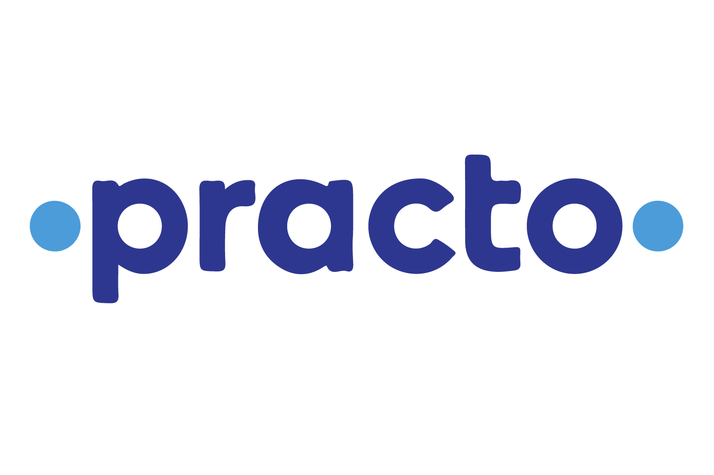

Practo is one of the most suitable example of the quote “Necessity Is The Mother Of All Inventions.”
Motivation Behind Practo:
It is rightly said that the most successful businesses are created out of personal pain points. When we face a problem and we are not able to find a solution to it, in desperation we Create One! That is exactly what the young boys – Shashank ND and Abhinav Lal did while studying B.Tech in IT from the National Institute of Technology in Karnataka.
It all began in early 2008, when Shashank ND was frantically getting together his father’s medical records and carefully scanning them in order to be able to receive a second opinion from an American physician, for an operation that his father was advised to undertake as soon as possible. Due to his unfortunate luck he was also unable to access enough information about the doctor to help him make an informed decision before putting his father’s life in the doctor’s hands. This incident had left a huge impact on him and it urged Shashank and his classmate Abhinav Lal to set up Practo Technologies Pvt. Ltd. so that they can make sure that no one else has to go through such a situation in future..
Their Service:
The aim Shashank and Abhinav had in mind was to simply be able to digitize online healthcare and they achieved their motive through Practo. Through Practo they wanted to build a software platform which allowed patients to book appointments with doctors, store digital health records of patients and erase the need for manual entry. Their service also reminds patients of any of the appointments that they have scheduled, photos or scans that are parts of the treatment are also available along with accounting and billing services. Practo helped to bring doctors and patients together on the same platform so that patients know where to go when they need to find the best doctor and also helps doctors in managing their patients in a better way.
Funding:
Funding for Practo was an issue during its founding day. Their network growth, traction growth and also the unique service that they provided combined together to help them gain funding in a smooth way.
The company has had five funding rounds till date. The details of which are as follows:
The Series A round was run in July 30th 2012 and it helped them rope in $4 million USD with Sequoia Capital
Series B 2015 was able to brought in $30 million USD through two investors which was again led by Sequoia Capital, their major investor.
Series C in 2015 was their biggest round of funding run which brought in $90 million USD led by Tencent Holdings
In October 2016, Practo actively ran a venture funding round. This helped them gather around $55 million USD over here.
Lastly, their Series D round was ran on Jan 16, 2017. This round got the company 9 investors on board with an amount of $55 million USD.
In total Practo is getting $234 million USD in funding over the past 5 rounds in 5 years.
Challenges faced:
When Shashank and Abhinav started building Practo Ray, the biggest challenge they faced was how to build a hyper responsive product in a market where Internet penetration was low and speed not as good as present in many other markets.
While building Practo.com, the challenge they faced was how to get reliable information about various doctors and clinics.
Third challenge, they faced was building the right infrastructure to scale their product as they were growing at an extremely fast pace.
Growth:
In July 2009, Practo got selected for the Start-Up Acceleration Program initiated by Morpheus Venture Partners. This provided the much needed boost to their confidence and with complete training and mentorship from the accelerator program they were able to expand their second and third offices in Chennai & Mumbai in October & November 2009 respectively.
Practo with a team strength of just 9 people then expanded their reach to Hyderabad, Delhi & Pune as well by the year 2011. Practo launched their first ever Practo Ray Android App by the end of 2011 and they were also able to serve 500,000 patients with the help 5000 different medical practices and 5000 doctors.
They began 2012 with the launch of their Unique IVR Service- Practo Hello which helped the doctors to be connected to patients followed by a fund raiser of USD 4 Million in July, form Sequoia Capital.
The year 2013 was the time for them to go global and with this thought in mind they launched their first ever office in Singapore.
Future Prospects:
With the mission of making ‘mankind live healthier, longer lives’ in mind Practo aims to be the one stop destination for patients to find their doctors, research about them and book online appointments. Apart from targeting new segments and releasing more products, Practo is also looking forward to grow its domestic and overseas presence. In India, Practo has already made its presence known in the top six cities and plans to further expand its presence in tier II cities. In terms of collaborations, Practo is currently seeking content partnerships across the healthcare industry. Though numerous competitors have come into the practice management space since Practo Ray began but Shashank and Abhinav firmly believe that Practo’s razor sharp focus on product quality and support has enabled it to maintain a steady lead and it always maintain it.
Wanna reach out to us?